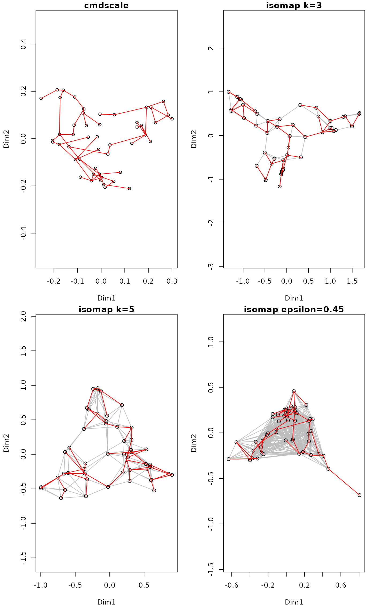
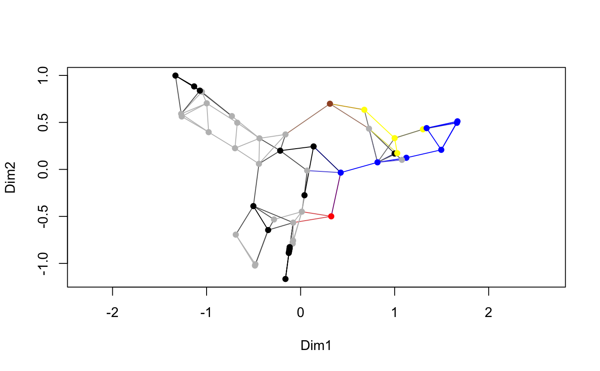

Isometric Feature Mapping Ordination
isomap.RdThe function performs isometric feature mapping which consists of three simple steps: (1) retain only some of the shortest dissimilarities among objects, (2) estimate all dissimilarities as shortest path distances, and (3) perform metric scaling (Tenenbaum et al. 2000).
Arguments
- dist
Dissimilarities.
- ndim
Number of axes in metric scaling (argument
kincmdscale).- epsilon
Shortest dissimilarity retained.
- k
Number of shortest dissimilarities retained for a point. If both
epsilonandkare given,epsilonwill be used.- path
Method used in
stepacrossto estimate the shortest path, with alternatives"shortest"and"extended".- fragmentedOK
What to do if dissimilarity matrix is fragmented. If
TRUE, analyse the largest connected group, otherwise stop with error.- x, object
An
isomapresult object.- net
Draw the net of retained dissimilarities.
- n.col
Colour of drawn net segments. This can also be a vector that is recycled for points, and the colour of the net segment is a mixture of joined points.
- type
Plot observations either as
"points","text"or use"none"to plot no observations. The"text"will useordilabelifnet = TRUEandordiplotifnet = FALSE, and pass extra arguments to these functions.- ...
Other parameters passed to functions.
Details
The function isomap first calls function isomapdist for
dissimilarity transformation, and then performs metric scaling for the
result. All arguments to isomap are passed to
isomapdist. The functions are separate so that the
isompadist transformation could be easily used with other
functions than simple linear mapping of cmdscale.
Function isomapdist retains either dissimilarities equal or shorter to
epsilon, or if epsilon is not given, at least k
shortest dissimilarities for a point. Then a complete dissimilarity
matrix is reconstructed using stepacross using either
flexible shortest paths or extended dissimilarities (for details, see
stepacross).
De'ath (1999) actually published essentially the same method before
Tenenbaum et al. (2000), and De'ath's function is available in function
xdiss in non-CRAN package mvpart. The differences are that
isomap introduced the k criterion, whereas De'ath only
used epsilon criterion. In practice, De'ath also retains
higher proportion of dissimilarities than typical isomap.
The plot function uses internally ordiplot,
except that it adds text over net using ordilabel. The
plot function passes extra arguments to these functions. In
addition, vegan3d package has function
rgl.isomap to make dynamic 3D plots that can
be rotated on the screen.
Value
Function isomapdist returns a dissimilarity object similar to
dist. Function isomap returns an object of class
isomap with plot and summary methods. The
plot function returns invisibly an object of class
ordiplot. Function scores can extract
the ordination scores.
References
De'ath, G. (1999) Extended dissimilarity: a method of robust estimation of ecological distances from high beta diversity data. Plant Ecology 144, 191–199
Tenenbaum, J.B., de Silva, V. & Langford, J.C. (2000) A global network framework for nonlinear dimensionality reduction. Science 290, 2319–2323.
Note
Tenenbaum et al. (2000) justify isomap as a tool of unfolding a
manifold (e.g. a 'Swiss Roll'). Even with a manifold structure, the
sampling must be even and dense so
that dissimilarities along a manifold are shorter than across the
folds. If data do not have such a manifold structure, the results are
very sensitive to parameter values.
See also
The underlying functions that do the proper work are
stepacross, distconnected and
cmdscale. Function metaMDS may trigger
stepacross transformation, but usually only for
longest dissimilarities. The plot method of vegan
minimum spanning tree function (spantree) has even
more extreme way of isomapping things.
Examples
## The following examples also overlay minimum spanning tree to
## the graphics in red.
op <- par(mar=c(4,4,1,1)+0.2, mfrow=c(2,2))
data(BCI)
dis <- vegdist(BCI)
tr <- spantree(dis)
pl <- ordiplot(cmdscale(dis), main="cmdscale")
#> species scores not available
lines(tr, pl, col="red")
ord <- isomap(dis, k=3)
ord
#>
#> Isometric Feature Mapping (isomap)
#>
#> Call:
#> isomap(dist = dis, k = 3)
#>
#> Distance method: bray shortest isomap
#> Criterion: k = 3
pl <- plot(ord, main="isomap k=3")
lines(tr, pl, col="red")
pl <- plot(isomap(dis, k=5), main="isomap k=5")
lines(tr, pl, col="red")
pl <- plot(isomap(dis, epsilon=0.45), main="isomap epsilon=0.45")
lines(tr, pl, col="red")

par(op)
## colour points and web by the dominant species
dom <- apply(BCI, 1, which.max)
## need nine colours, but default palette has only eight
op <- palette(c(palette("default"), "sienna"))
plot(ord, pch = 16, col = dom, n.col = dom)

palette(op)